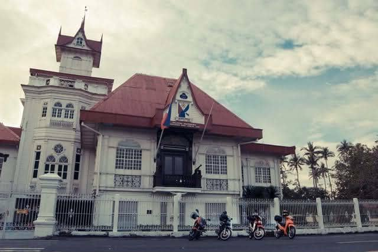
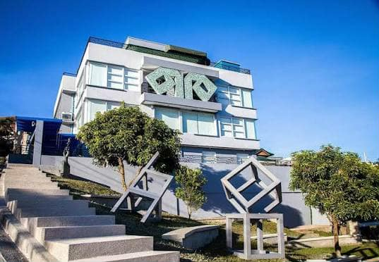
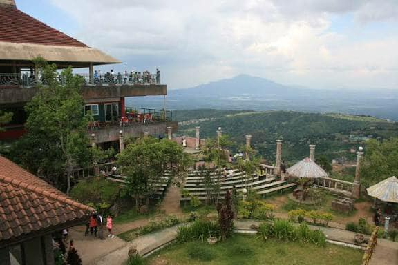
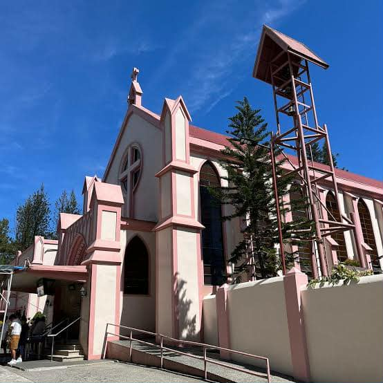
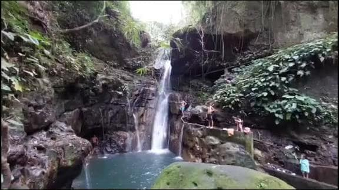

Looking for places to visit in Cavite? Discover stunning destinations, exciting activities,
must-see attractions, and top tourist spots to make your travel goals a reality.

Explore popular experiences
Explore the lush landscapes and idyllic spots in Cavite, also known as the Historical Capital of the Philippines
or the Land of the Brave. Discover a multitude of attractions and find out why it’s a popular destination for
weekend getaways.

1. Visit the Shrine of General Emilio Aguinaldo
TThe historic house where Emilio Aguinaldo, the first president of the Philippines, lived and declared
independence.The shrine is a museum that showcases artifacts and memorabilia from the Philippine Revolution.

2. Visit the Museo Orlina
A museum dedicated to the works of the renowned Filipino glass sculptor Ramon Orlina. The museum features a
collection of his glass art pieces, showcasing his mastery in the medium.

3. Visit People's Park in sky
Offers incredible views of the surrounding landscape and a unique architectural structure. It is a great place to
relax, take photos, and enjoy the scenery.
4. Explore Malinta Tunnel
Located on Corregidor Island, this historic tunnel served as a crucial command center and hospital during WWII.
Visitors can explore the tunnel and learn about its significance in Philippine history.

5. Visit Pink Sisters Chapel
A beautiful and tranquil place of worship known for its distinct architectural style. The chapel is run by the
Congregation of the Sisters of St. Paul of Chartres, who are known for their pink habits, hence the name "Pink
Sisters."

6. Visit Sk Ranch
A popular recreational park that offers a variety of outdoor activities and attractions for families and friends.
The park features horseback riding, zip-lining, a mini zoo, and picnic areas.

7. Explore Mt. Pico de Loro
A popular hiking destination known for its unique rock formations and panoramic views. The mountain is part of
the Mounts Palay-Palay Mataas-na-Gulod Protected Landscape and is a favorite spot for outdoor enthusiasts.

8. Explore Malibiclic Falls
A beautiful waterfall located in the town of Amadeo, Cavite. The falls are surrounded by lush greenery and
provide a refreshing escape from the heat.

9. Visit Patungan Beach Cove
A serene beach destination located in the town of Ternate, Cavite. The beach is known for its clear waters, white
sand, and stunning views of the nearby islands.
10. Visit Imus Cathedral
A historic church located in the city of Imus, Cavite. The cathedral is known for its beautiful architecture and
rich history, dating back to the Spanish colonial period.